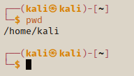

Navigating the File System
With previous Python & software develpoing experience, you laready have some knowledge and experience using Linux.
Kali Linux is just the same, so I will briefly go through some of the Linux commands you are expected to know as a pen tester.
pwd

Find out the present working directory
cd ..

This takes you back one directory.
ls

This will present a list of items in the current directory.
cd Desktop/

This will move you from your current location to the directory provided.
You can also navigate to folders located in other directories by using a backslash along with the directory. In this example we are viewing the contents of the etc folder
while being in the Desktop directory.
ls /etc/

The command ls could be changed to a change directory or we can even create new files/sub-directories.
mkdir new_folder

This creates a new directory with the make new directory kewyword.
rmdir new_folder

Deletes a directory from location - this has to be empty or it wont work
ls -la

Show hidden files
touch new_folder/test.txt

Creates a new file in the location in the chosen directory.
rm -r new_folder

This removes the folder and the contents in it.
cp test.txt Downloads/

This will copy the file to the given directory. First we create a new file then when we check the location we can see our original file is there.
Then when we check the contents of the Downloads folder we can find the copied file.
cp test.txt test2.txt

We can copy a file and change the name of the file. We can also do the same when we copy files to another directory.
rm Downloads/test.txt

This will delete the given file(s)s without having to change directory.
mv test.txt Downloads/

This will move the file to the given folder
locate bash

This looks for all the files with the word bash in it, this isn't the best way to find a specific file if has a generic name. This is just a snippet of the full results.
passwd

It will ask you for your current password then prompt you for a new password. The password will be updated once you press enter.
man ls

This give you an indepth information on the command. man can be used for loads of commands.
To quit / exit from the manual you press the q key.
(This is just a snippet)
REMEMBER !!
- Get used to making these commands in from the terminal
There are more commands to learn.. should update this as my progress increases.